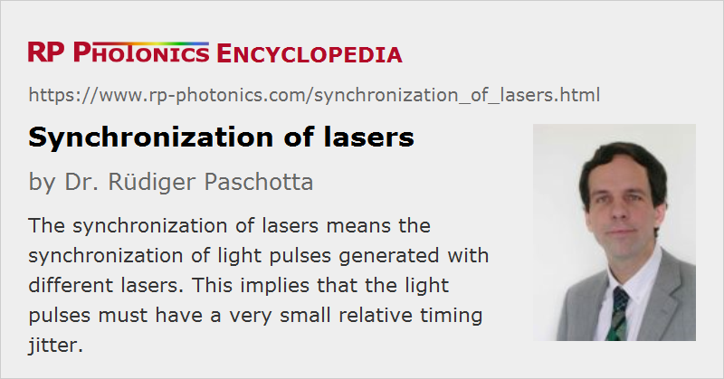

Synchronization of Lasers
Definition: the synchronization of light pulses generated with lasers
German: Synchronisierung von Lasern
Categories: lasers, fluctuations and noise, light pulses, methods
How to cite the article; suggest additional literature
Author: Dr. Rüdiger Paschotta
The synchronization of lasers usually means that the temporal positions of generated laser pulses are adjusted such that the pulses from two lasers temporally coincide, or that the pulses from one laser coincide with some electronic signal. This is more clearly called timing synchronization. Some examples:
- If one wants to utilize nonlinear frequency conversion processes involving different pulses – for example, sum or difference frequency generation or optical parametric amplification, this can work only if the pulses meet within some nonlinear medium. See also the article on synchronous pumping.
- Two-color pump–probe measurements, as can be used e.g. in laser spectroscopy, require precise control of the relative timing, since one is measuring the dependence of a nonlinear response on a delay time between the pulses.
- In the area of optical frequency metrology, one often needs to precisely synchronize the pulse emission of a mode-locked laser with a given electronic signal, or the pulse emission of two lasers.
- Systems for optical data transmission also often require some form of synchronization.
In some other cases, what is synchronized are actually the electric field oscillations of two continuous-wave lasers; this is more precisely called phase synchronization and is required e.g. for coherent beam combining. Both types of synchronization are treated in the following.
Synchronization of Pulses from Mode-locked Lasers
Mode-locked lasers emit very regular trains of ultrashort pulses. If two such lasers are operated with precisely the same pulse repetition rate, it can happen that each pulse emitted by one laser temporally coincides with one pulse of the other laser, and this over a long time.
If a laser is actively mode-locked, the emitted pulses are naturally in synchronism with the electronic drive signal. However, stable operation of such a laser often requires an active feedback system acting on the resonator length, since the optical modulator used for active mode locking has only a very limited power to “pull” the circulating pulses towards the desired temporal positions. In case of passive mode locking, resonator length control (or a similar message for controlling the resonator round-trip time) is the only way to control the pulse timing.
The relative pulse timing can be disturbed by various effects. In most cases, it is dominantly affected by drifts of the length of the laser resonator and by mechanical vibrations. For example, consider a laser emitting 1-ps pulses with a pulse repetition rate of 100 MHz. If the resonator length changes only by 1 nm, this implies a timing error of ≈3.3 as (attoseconds) per round trip. Although that is not very much, within a million resonator round trips (i.e., within 0.01 seconds), the accumulated pulse timing error is already 3.3 ps, i.e., several times the pulse duration, and the temporal overlap of pulses is lost. Similarly, small temperature changes e.g. within a laser crystal can also affect the pulse timing. Fast vibrations are less of a problem, since the pulse timing cannot drift very far within a short oscillation period of such a vibration.
Due to the extremely high sensitivity of the pulse timing to various effects, long-term synchronized operation of such lasers requires the use of some automatic feedback system. It is quite easy to modify the resonator length e.g. with a piezo transducer mounted below one of the resonator mirrors with a range of e.g. a few micrometers; the greater challenge is to precisely measure the timing error in order to obtain a suitable error signal for driving the transducer.
The measurement precision achievable with ultrafast photodetectors and electronics is in many cases insufficient for that purpose. However, there are all-optical techniques – in particular, the use of an optical cross correlator. Here, the two pulses, the timing of which must be compared, are sent into a nonlinear crystal where some nonlinear interaction (e.g. sum frequency generation) can take place only if the two pulses meet within the crystal. A moderately fast photodetector, registering the nonlinear mixing product, delivers the signal, and this depends very sensitively on the relative timing – however, without telling the sign of the timing error, which is of course relevant for finding the required resonator length correction. In order to obtain information on that sign as well, one can use a balanced cross correlator, where one creates two such signals, where for one of these a small timing change is applied to one of the pulses, so that the maximum signal from both detectors is achieved for slightly different relative timings. The difference of the two signals then provides a suitable error signal, offering a very high timing discrimination (e.g. some volts per picosecond timing error or even more) together with the needed sign information.
If such an automatic feedback system works well and the lasers are well protected against vibrations, temperature changes, pump power fluctuations and the like, the remaining timing jitter can be extremely small: in some cases it has an r.m.s. value far below one femtosecond [6], i.e., a very small fraction of the pulse duration.
The control of the resonator length is most frequently used, but not the only possibility. For example, it has been shown that the timing of a passively mode-locked laser can also be influenced by control pulses hitting the saturable absorber used for mode locking [3]. Also, passive synchronization is possible if two lasers can interact by cross-phase modulation in a laser crystal, for example [2, 9].
It is also possible to synchronize the outputs of ultrafast amplifiers for high pulse energies. Such amplifiers often contain a regenerative amplifier, in which the amplified pulse does many resonator round trips. Nevertheless, the obtained pulse timing can be quite precise – not limited by the switching precision of a Pockels cell used for injecting and extracting the pulse. Before the amplifier system, one usually uses a pulse picker for reducing the pulse repetition rate by a certain factor. By changing that division factor, one can only achieve a course adjustment of the pulse frequency; for fine control, the pulse repetition rate of the seed laser needs to be controlled.
For the discussed kind of pulse synchronization, the optical frequencies are not relevant, but only the pulse envelopes; the optical frequencies may differ substantially between the two lasers. In some cases, however, one needs not only the synchronization of the pulse envelopes, but even phase synchronization of the oscillations of the electric fields (similar to the case of continuous-wave lasers, see below). For example, such kind of synchronization allows one to combine two ultrashort pulse lasers such that one obtains an overall wider bandwidth and shorter output pulses [4]. In that case, one requires two independent controls, acting on two different parameters of the laser emission: the pulse timing and the carrier–envelope offset. For example, one can use the combination of a piezo-actuated mirror and pump power control. See the article on carrier–envelope offset for more details.
Synchronization of Pulses from Q-switched Lasers
The technical details of the synchronization of actively Q-switched lasers are very different from those for mode-locked lasers:
- The pulse durations are far longer – typically several nanoseconds or more. The required precision is often just some fraction (e.g. one tenth) of the pulse duration. This is sufficient, for example, if one does some kind of nonlinear frequency conversion such as sum or difference frequency generation.
- The resonator length is not a critical parameter, because the pulse timing is essentially determined by the gain dynamics, and small resonator length changes have a minor effect on the pulse duration.
- The pulse emission in an actively Q-switched laser can simply be triggered via the used optical modulator (e.g., an acousto-optic modulator). However, the output pulse will always have some significant delay, amounting to a large multiple of the pulse duration. This means that it must be known ahead of time when a pulse is required.
- In addition, the mentioned pulse delay can substantially fluctuate, e.g. if the energy stored in the laser crystal is not always the same: the more energy is stored, the higher the gain, and the smaller will be the pulse delay. If two different actively Q-switched lasers need to be synchronized, one of them may need the trigger signal at an earlier time than the other one, and both lasers must be optimized such that the pulse delay is quite reproducible.
The situation is again different for passively Q-switched lasers. Here, the pulse emission can be triggered by pumping the gain medium such that the optical gain becomes sufficiently high for pulse emission. Relatively precise timing is possible with pulsed pumping, but there is again a substantial delay between the pump pulse and the emitted pulse. In case of continuous pumping, leading to the emission of a more or less regular pulse train, the pump power can be used to adjust the pulse repetition rate.
Phase Synchronization of Continuous-wave Lasers
Phase synchronization of continuous-wave lasers means that the electric field oscillations of their outputs are synchronized. Because the optical frequencies are very high, this implies an extremely high timing precision – well below one optical cycle, which may last a few femtoseconds only.
A relatively simple method is injection locking. Here, the output of one laser (the master laser) is injected into the other one (the slave laser); under suitable conditions, this will force the slave laser to emit phase-synchronously.
Instead, one can also use a method based on active feedback. The following is needed:
- Both lasers need to be optimized for a very narrow emission linewidth, i.e., for very weak random phase changes of the output.
- A suitable error signal must be generated. This can be easily obtained by interference between the two outputs e.g. on a beamsplitter. The difference of electronic signals from two photodetectors behind the beam splitter clearly tells what the phase difference is (within some limited range of phase differences).
- The optical frequency of at least one of the lasers needs to be controlled accordingly, e.g. with piezo-actuated mirror.
In a modified scheme, it is also possible to stabilize lasers such that the difference of the optical emission frequencies exactly fits to some electronic signal; again, a kind of phase locking is possible.
Quantifying the Quality of Synchronization
For a single pair of pulses from to lasers, one can simply specify the timing error as the time difference between the pulse maxima (or possibly the “center of gravity” in the time domain). However, one often requires statistical information on the timing errors. One possibility is to specify the power spectral density of the timing error. In many cases, it is sufficient to know some r.m.s. (root mean square) value, which can be obtained by integrating the power spectral density over some frequency range (i.e., some range of noise frequencies) and taking the square root. The result can of course depend on the mentioned frequency range; therefore, the result is meaningful only in combination with these two values.
For phase synchronization, the same quantification is possible as with timing synchronization, just replacing the timing error with the phase error.
Suppliers
The RP Photonics Buyer's Guide contains 13 suppliers for laser synchronization devices. Among them:
Questions and Comments from Users
Here you can submit questions and comments. As far as they get accepted by the author, they will appear above this paragraph together with the author’s answer. The author will decide on acceptance based on certain criteria. Essentially, the issue must be of sufficiently broad interest.
Please do not enter personal data here; we would otherwise delete it soon. (See also our privacy declaration.) If you wish to receive personal feedback or consultancy from the author, please contact him e.g. via e-mail.
By submitting the information, you give your consent to the potential publication of your inputs on our website according to our rules. (If you later retract your consent, we will delete those inputs.) As your inputs are first reviewed by the author, they may be published with some delay.
Bibliography
| [1] | M. J. W. Rodwell et al., “Subpicosecond laser timing stabilization”, IEEE J. Quantum Electron. 25 (4), 817 (1989), doi:10.1109/3.17346 |
| [2] | C. Fürst, A. Leitenstorfer und A. Laubereau, “Mechanism for self-synchronization of femtosecond pulses in a two-color Ti:sapphire Laser”, J. Sel. Top. Quantum Electron. 2, 473 (1996), doi:10.1109/2944.571746 |
| [3] | N. H. Bonadeo et al., “Passive harmonic mode-locked soliton fiber laser stabilized by an optically pumped saturable Bragg reflector”, Opt. Lett. 25 (19), 1421 (2000), doi:10.1364/OL.25.001421 |
| [4] | R. K. Shelton et al. “Phase-coherent optical pulse synthesis from separate femtosecond lasers”, Science 293, 1286 (2001), doi:10.1126/science.1061754 |
| [5] | R. K. Shelton et al., “Subfemtosecond timing jitter between two independent, actively synchronized, mode-locked lasers”, Opt. Lett. 27 (5), 312 (2002), doi:10.1364/OL.27.000312 |
| [6] | T. R. Schibli et al., “Attosecond active synchronization of passively mode-locked lasers by balanced cross correlation”, Opt. Lett. 28 (11), 947 (2003), doi:10.1364/OL.28.000947 |
| [7] | Y. Kobayashi et al., “Phase-coherent multicolor femtosecond pulse generation”, Appl. Phys. Lett. 83 (5), 839 (2003), doi:10.1063/1.1598651 |
| [8] | W. Seitz et al., “All-optical synchronization and mode locking of solid-state lasers with nonlinear semiconductor Fabry-Pérot mirrors”, IEEE J. Sel. Topics Quantum Electron. 9, 1093 (2003), doi:10.1109/JSTQE.2003.819100 |
| [9] | M. Betz et al., “All-optical phase locking of two femtosecond Ti:sapphire lasers: a passive coupling mechanism beyond the slowly varying amplitude approximation”, Opt. Lett. 29 (6), 629 (2004), doi:10.1364/OL.29.000629 |
| [10] | M. Rusu, R. Herda and O. G. Okhotnikov, “Passively synchronized two-color mode-locked fiber system based on master-slave lasers geometry”, Opt. Express 12 (20), 4719 (2004), doi:10.1364/OPEX.12.004719 |
| [11] | D. Yoshitomi et al., “Ultralow-jitter passive timing stabilization of a mode-locked Er-doped fiber laser by injection of an optical pulse train”, Opt. Lett. 31 (22), 3243 (2006), doi:10.1364/OL.31.003243 |
| [12] | J. Janousek et al., “Investigation of passively synchronized dual-wavelength Q-switched lasers based on V:YAG saturable absorber”, Opt. Commun. 265 (1), 277 (2006), doi:10.1016/j.optcom.2006.03.002 |
| [13] | O. V. Palashov et al., “Synchronization of two Q-switched lasers with 150 ps jitter”, Appl. Opt. 47 (17), 3124 (2008), doi:10.1364/AO.47.003124 |
| [14] | J. Kim and F. X. Kärtner, “Attosecond-precision ultrafast photonics”, Laser & Photon. Rev. 4 (3), 432 (2010), doi:10.1002/lpor.200910003 |
| [15] | D. Yoshitomi et al., “Long-term stable passive synchronization of 50 μJ femtosecond Yb-doped fiber chirped-pulse amplifier with a mode-locked Ti:sapphire laser”, Opt. Express 18 (25), 26027 (2010), doi:10.1364/OE.18.026027 |
| [16] | M. Zhang et al., “Passive synchronization of all-fiber lasers through a common saturable absorber”, Opt. Lett. 36 (20), 3984 (2011), doi:10.1364/OL.36.003984 |
| [17] | A. Schwarz et al., “Active stabilization for optically synchronized optical parametric chirped pulse amplification”, Opt. Express 20 (5), 5557 (2012), doi:10.1364/OE.20.005557 |
| [18] | R. Paschotta, H. R. Telle, and U. Keller, “Noise of Solid State Lasers”, in Solid-State Lasers and Applications (ed. A. Sennaroglu), CRC Press, Boca Raton, FL (2007), Chapter 12, pp. 473–510 |
See also: stabilization of lasers, mode-locked lasers, timing jitter, laser noise, carrier–envelope offset, coherent beam combining, synchronous pumping
and other articles in the categories lasers, fluctuations and noise, light pulses, methods
|  |
If you like this page, please share the link with your friends and colleagues, e.g. via social media:
These sharing buttons are implemented in a privacy-friendly way!